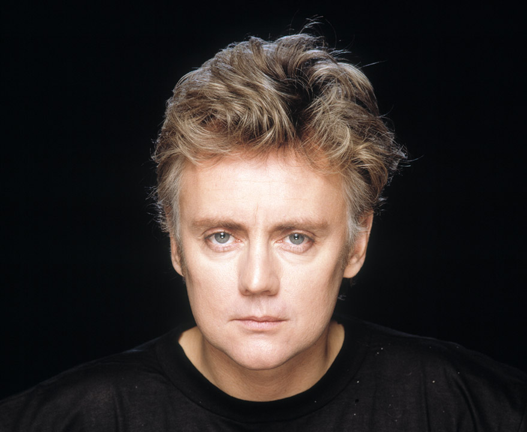
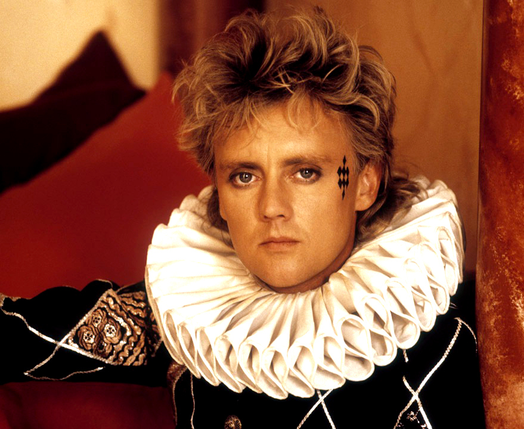

Roger Taylor
 Роджер Меддоуз-Тейлор появился на свет 26 июля 1949 года в британском городе Кингс-Линн графства Норфолк. Роддом, в котором родился будущий барабанщик, однажды посетила Елизавета Вторая. В процессе этого визита королеву Великобритании представили 16 будущим матерям, среди которых была и мама Роджера.
Своим музыкальным кумиром и главным вдохновителем юноша считал Кита Муна из рок-группы The Who, поэтому старался соответствовать внушительному звуку его барабанов.
В 1967 году парень отправился в столицу Великобритании, чтобы получить стоматологическое образование в местном медицинском колледже. Однако практически сразу Роджеру стала неинтересна зубная наука, поэтому он предпочел перейти на биологический факультет Лондонского политехнического института.
Спустя год студент обратил внимание на объявление о поиске ударника в начинающую музыкальную группу, которое висело в Империал-колледже. Откликнувшись на него, Тейлор впервые встретился с гитаристом коллектива Брайаном Мэем, а также с актуальным на тот момент вокалистом и басистом Тимом Стаффелом. В ходе прослушивания барабанщик был приглашен в команду, просуществовавшую 2 года и распавшуюся после того, как солист перешел в иной коллектив.
В 1969 году ударник был сотрудником магазина Kensington Market, в котором работал вместе с Фредди Меркьюри. Более того, молодые люди являлись практически соседями, так что их знакомство было лишь вопросом времени. Фредди являлся на тот момент огромным поклонником творчества группы Smile. Узнав о распаде музыкального коллектива, Фредди предложил двум ее бывшим участникам сформировать новую команду. Именно он стал автором броского названия Queen.
Свою дебютную песню Роджер выпустил, когда состоялся перерыв в работе над пластинкой 1977 года News of the World группы Queen. Композиция носила название I Wanna Testify.